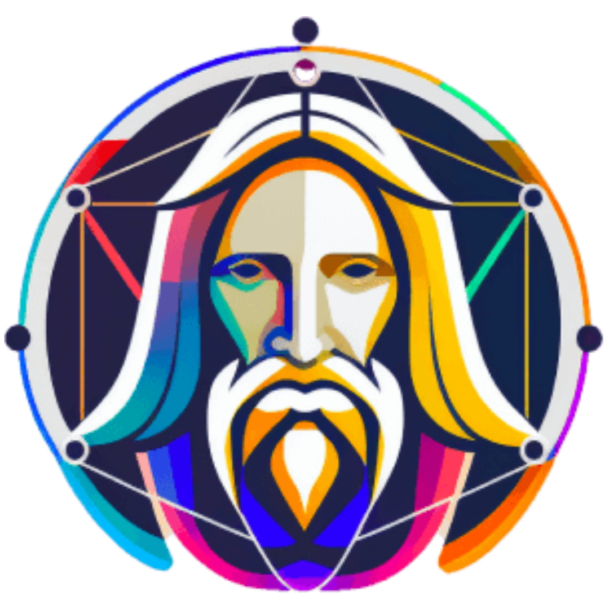
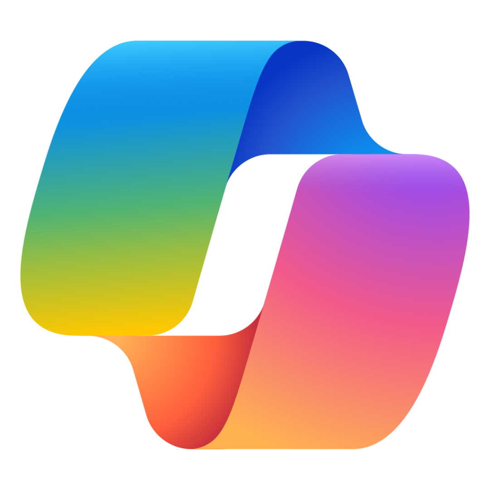

ChatGPT
O ChatGPT, é um modelo de linguagem desenvolvido pela OpenAI, baseado na arquitetura GPT-4. Fui projetado para compreender e gerar texto em linguagem natural, o que lhe permite interagir com os usuários, responder a perguntas, oferecer conselhos, gerar ideias criativas, entre outras funções. Sua formação vem de grandes volumes de textos e livros, que o permitem fornecer respostas informativas, conversas e historias Foi lançado em novembro de 2022 e é constantemente aprimorado para melhorar sua precisão e capacidade de atender a uma ampla variedade de solicitações.
Visitar ChatGPTLeonardo AI
O Leonardo Ai é uma ferramenta gratuita que, a partir da inteligência artificial generativa, é capaz de produzir imagens de acordo com os comandos e prompts dos usuários. Inspirada no renomado artista Leonardo da Vinci, daí o nome deste modelo de inteligência artificial, a ferramenta é de fácil uso. Uma das características mais chamativas Leonardo AI é a facilidade do processo de geração de imagens por meio dos prompts de texto, tornando a ferramenta acessível até para aqueles que nunca tiveram contato com uma IA.
Visitar Leonardo AICopilot
O Copilot, é um assistente de IA criado pela Microsoft, projetado para ajudar os usuários a acessar informações, gerar ideias, oferecer suporte e se divertir em conversas. Sua missão é aumentar o conhecimento e a compreensão das pessoas, ajudando em tarefas de produtividade, sintetizando informações da web e oferecendo suporte. A Inteligencia Artificial constantemente aprendizado e atualizações para fornecer as informações mais precisas e úteis. Seja respondendo perguntas, ajudando em projetos criativos ou simplesmente batendo um papo.
Visitar Copilot